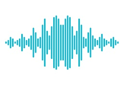
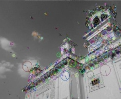
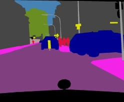
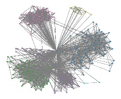

Languages : Python, SQL, MATLAB, Elixir, C/ C++, HTML, CSS
Tools/ Libraries : Keras, TensorFlow, Tensor Board, Pandas, Geopandas, NumPy,
Scikit-Learn, OpenCV, Matplotlib, Plotly, PyQt, Seaborn, Spacy,
NLTK, Beautiful Soup, Jupyter Notebook, QGIS
Research Papers 🎓💡
- Kumar, Sushil, et al. "Colour image segmentation with histogram and homogeneity histogram difference using evolutionary algorithms." International Journal of Machine Learning and Cybernetics 9.1 (2018): 163-183.
- Aditya Dutt, Richa Dutt, Hema N. (2017). Development of Cost-Effective Substitute of Braille Tactile Display Operated by Linear
Actuators: IEEE Xplore.
Academic Research 🎓💡
Emotion Detection from speech and music Aug 2020 - Present
- The aim of research is to detect emotions through human speech or music. Currently working on detecting different emotions by analyzing spectrograms as a visual representation speech features
such as the pause between each word, pitch, loudness, and more. Testing an analytical blend of words with aggregate factors (pauses, pitch, etc.) to more accurately do sentiment analysis including
which may alert to health issues also.
Cancer Cell Segmentation on H&E slides July 2020 - Oct 2020
- The aim of project was to segment cells in H&E slides. The inconsistent background, different contrast in different slides make the segmentation really challenging. I implemented combinations of different algorithm like thresholding methods, active contours, and U-Nets.
Lexicon-Based Segmentation of Offline Cursive Handwriting Jan 2019 - Dec 2020
- Worked on a project to build a machine learning model that can recognize cursive handwriting, which is a more difficult task than
recognizing printed characters. The objective was to develop algorithm that can understand handwriting and accurately convert
handwritten text to printed documents. The application is useful for reading postal addresses, bank check amounts, and forms.
- • Implemented a combination of connected component analysis and distance transform to segment (or oversegment) word into
possible characters. The small segments which are not characters can be used as a good dataset to test outlier detection
algorithms.
- • Developed a robust peak detection algorithm to detect peaks pointed in all directions in binary images which correctly splits a
word into possible characters. Used a dynamic programming algorithm and CNN to find a match score between each string in the
lexicon (dictionary) and the segmented parts of word image.
Experience 👔 💼
Graduate Research Assistant
IFAS, University of Florida, Jan 2020 - Dec 2020
- ⚙️ Lead the construction of a custom SQL database to gather and analyze data from India’s National Sample Survey Office. Data
is comprised of housing conditions, employment and agricultural assessment surveys of India.
- ⚙️ Implementing autoencoder and regression methods to estimate indicators of poverty and food security across economically depressed
regions of India by analyzing regional patterns of land cover change.
- ⚙️ Predict future years socio-economic features using census data and poverty indicators.
Graduate Teaching Assistant
Computer Science Department, University of Florida, Aug 2019 - Nov 2019
- Course: Distributed Operating Systems
- ⚙️ Created course assignments that were approved by the supervising professor. Managed one Teaching Assistant and one Course
Grader. Held weekly office hours, graded coursework, and championed student development.
- ⚙️ Collaborated in creating projects (and grading system) based on Twitter implementation and gossip algorithms in Elixir using the
actor model to simulate the dissemination of information across a network using Honeycomb and 3D Torus.
- ⚙️ Received an end-of-semester evaluation score of “Outstanding” based on student feedback.
IOT Intern
IIT Delhi, India Jun 2016 - Jul 2016
- ⚙️ Tasked with the challenge of controlling the rpm of a DC motor clock so that it synchronized with data from a GPS using Beagle
Bone.
- ⚙️ Created a webpage using HTML, CSS, and JavaScript to monitor live data from microcontroller to detect and resolve time and
clock errors.
- ⚙️ Gathered data from Arduino and Wi-Fi module (ESP8266) and stored it in the SQL database. Next, pushed data from database on
the webpage allowing microcontroller hardware to be controlled remotely.
Projects 👨🏽💻
Music Genre Classification

Used LSTM and CNN to classify music into progessive and non-progressive rock music.
Github
Object Tracking using SIFT Algorithm

Demonstration of sift algorithm to track objects and observing the effect of each parameter on performance.
Github
Bitcoin Simulator
Implementation of Bitcoin protocol to simulate bitcoin mining, wallet and transactions.
Github
Image segmentation Methods Demo

Demonstration of a few useful segmentation algorithms like Canny Edge Detector, Snakes, Active Contour and KNN.
Github
Gossip Algorithm

Implementation of gossip protocols for information dissemination in a network with different kinds of topologies.
Github
Cursive Handwriting Segmentation and Recognition Library
A Cursive Handwriting Segmentation and recognition Library. Multiple models are trained using Transfer Learning, One Shot Learning, CNN, and MLP.
Play
Achievements 🎖🎖
⚙️ Robotics Competition: Robometry IIT Roorkee Saharanpur Campus, 2014
- Secued 1st Place. Our team built an autonomous line follower robot which completed all the tasks successfully.
⚙️ Autonomous Robotics Competition: Nightwing, 2014
- Secued 3rd Place. The goal was to finish the race while following the line. Our team built an autonomous line follower robot.
Volunteer
⚙️ Organizing member of UCR Robotics club in JIIT, Noida, 2015
- • Designed the autonomous robotics competition track for line follower and managed track designing.
- • Created event rules and scoring scheme.
UCR Club JIIT